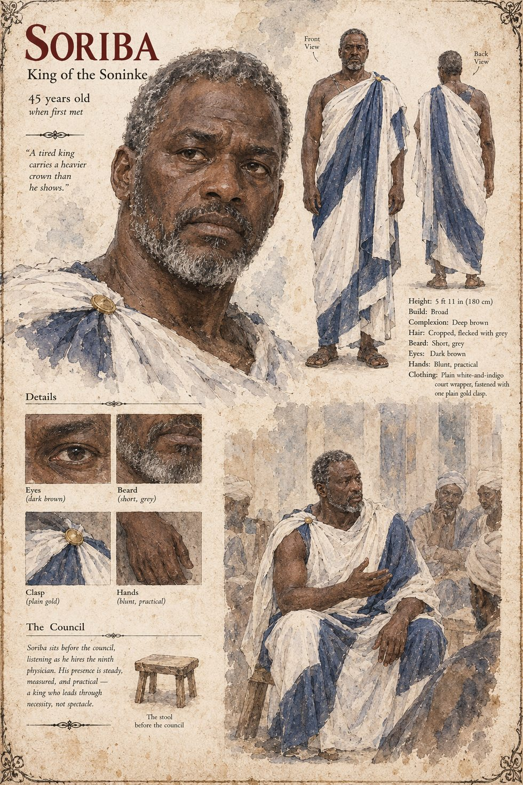

Soriba
King of Danjeri · father of Tiemoko and Damba · 45 years old when first met on his sheet
King of Danjeri, a practical man, who by the winter the manuscript first meets him had by then exhausted every physician his own court could produce for his second son, Damba, and was in the mood to try anything that did not cost him standing to try. That is how Sana reaches the palace: on the word of a caravan-master, as the household's ninth physician. The manuscript gives the king no scene of his own at the bedside. Queen consort Yarissa sits with Sana through Damba's last two nights, and it is she, seventeen days after the burial, who dictates the treasury line for the dog; she lives fourteen years more, never once enters the kennel yard, and dies in the dry season in her sleep without having asked after it.
Soriba followed her three years later of a lung complaint his physicians declined to name. His elder son, Tiemoko, who has been sitting in on council mornings since he was thirteen and is now his only surviving son, is Weighed onto the throne in the month of Kerren. The beer-house of Chapter Seven fixes the dog's age against him: by its informal reckoning the dog had been a grown animal when King Soriba died.
The manuscript gives Soriba his title, his temper and his illness, and no age, face or build. The sheet's title strip, King of the Soninke, and its age of 45 when first met are its own, with the 5 ft 11 in (180 cm) broad frame, deep brown skin, cropped hair flecked with grey, short grey beard, dark brown eyes, blunt practical hands and plain white-and-indigo court wrapper fastened with one plain gold clasp. It prints a line for him, A tired king carries a heavier crown than he shows., which is not in the manuscript, and its scene, The Council, draws him on a stool before the council, listening as he hires the ninth physician, in the sheet's own words.
“a practical man”